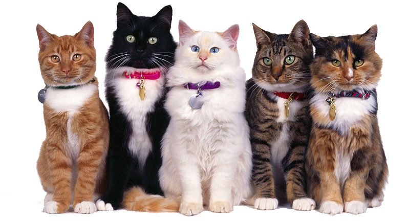

SENSOR DE TEMPERATURAS

En este proyecto desarrollaremos un software y hardware en el cual utilizaremos datos
proporcionados por el usuario en los cuales mostrarán las temperaturas de sus hogares, proporcionando información
la cual utilizaremos
para informar sobre las adecuadas temperaturas que necesitan nuestros gatos en el hogar.
Medicion de temperatura
| Fecha |
Hora |
Temperatura |
| 02/04/2022 |
12:00 am |
13.6 °C |
| 03/04/2022 |
12:00 am |
13.6 °C |
| 04/04/2022 |
12:00 am |
13.6 °C |
Eventos destacados
| Apertura de puerta |
Se cierra la puerta |
| Se abre la puerta: 12:05pm |
Se cierra la puerta: 13:35pm |
| Se abre la puerta: 12:05pm |
Se cierra la puerta: 13:35pm |
| Se abre la puerta: 12:05pm |
Se cierra la puerta: 13:35pm |
Sobre Gatos
Seguramente, como dueño de un pequeño felino quieres darle lo mejor a tu minino y hacer que se sienta
cómodo en su lugar. En principio hay que decir que la temperatura corporal de los gatos es de 38 a 39°C.
El animal igualmente manifestará de distintas formas si tiene frío o demasiado calor, seleccionando el lugar
correcto donde se sienta más cómodo.
Haga click aquí para conseguir mas informacion sobre Gatos
| Nombre |
Rut |
Correo Electronico |
| Renata Quinteros |
21.494.345-K |
renata.quinteros@alumnos.uv.cl |
| Benjamín Cárcamo |
|
benjamin.carcamo@alumnos.uv.cl |
| Stefanny Montero |
21.263.741-6 |
stefany.montero@alumnos.uv.cl |
| Ariel Hernández |
21.393.893-2 |
ariel.hernandez@alumnos.uv.cl |